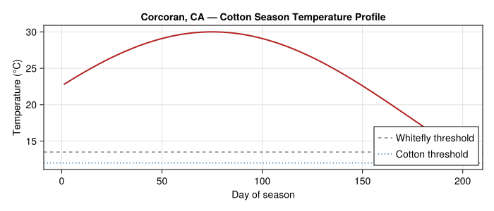
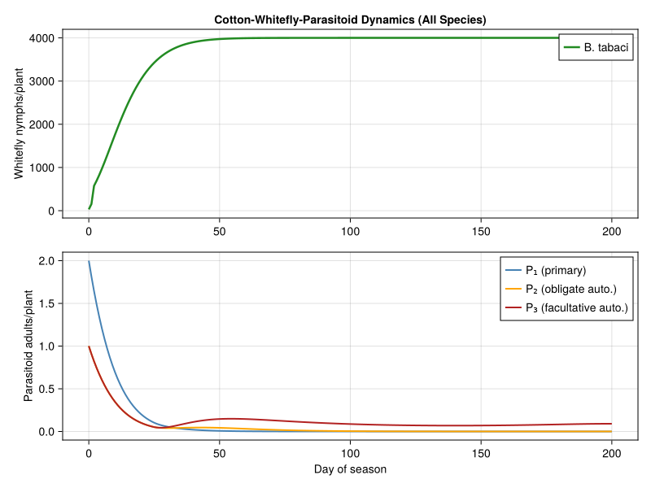
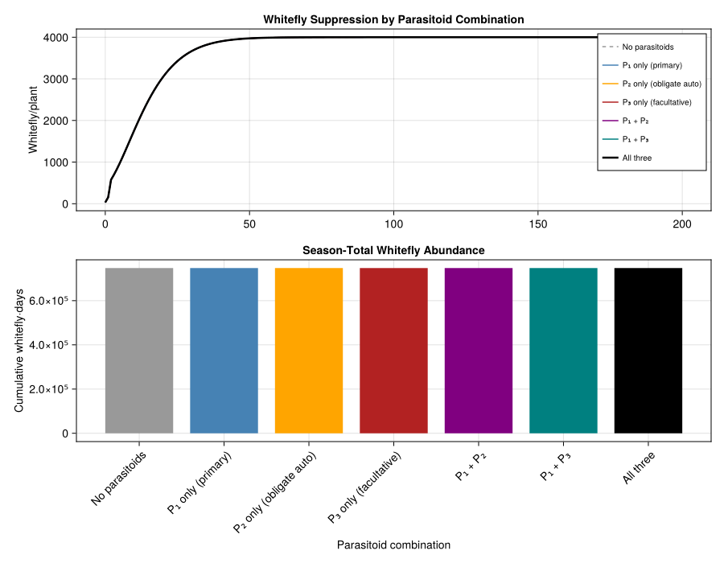
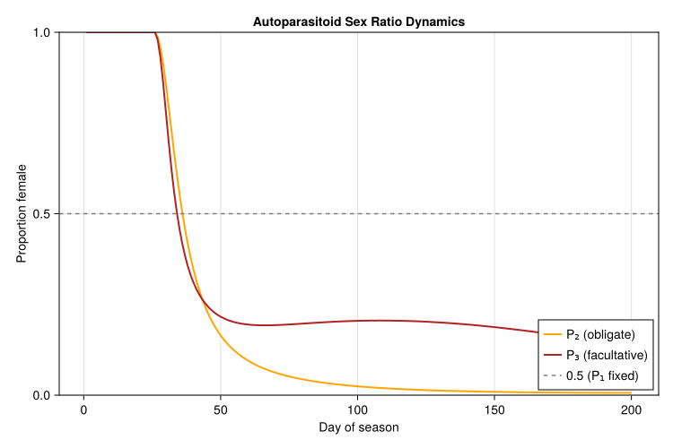
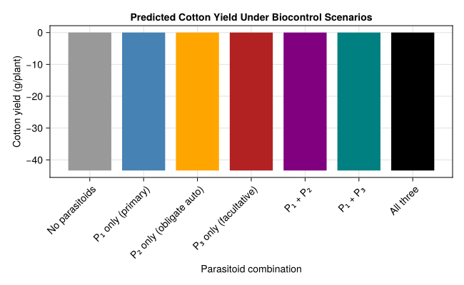

Cotton-Whitefly-Autoparasitoid Dynamics
PhysiologicallyBasedDemographicModels.jl
- Introduction
- Model Structure
- Parameters
- Weather
- Implementation
- Results
- Analysis — Biocontrol Efficacy
- Parameter Sources
- Discussion
- References
Introduction
The sweetpotato whitefly Bemisia tabaci (Gennadius) is a major pest of cotton (Gossypium hirsutum L.) in the San Joaquin Valley of California and worldwide. Biological control of whiteflies relies heavily on aphelinid parasitoids, which display a remarkable diversity of reproductive strategies centred on heteronomous hyperparasitism — where males and females develop on different host types.
Mills & Gutierrez (1996) developed a tritrophic physiologically based demographic model (PBDM) for the cotton–whitefly–parasitoid system that captures three distinct aphelinid biologies:
- Primary parasitoid (P₁) — modelled on Eretmocerus spp.: both sexes develop directly on whitefly nymphs with a fixed 1:1 sex ratio.
- Obligate autoparasitoid (P₂) — modelled on Encarsia (obligate form): females develop on unparasitized whitefly, but males develop only as hyperparasitoids of conspecific females.
- Facultative autoparasitoid (P₃) — modelled on Encarsia (facultative form): females develop on whitefly, males develop as hyperparasitoids of any parasitoid species including itself.
Schreiber, Mills & Gutierrez (2001) extended this analysis with stage-structured ODE models to show that obligate autoparasitism always stabilizes host–parasitoid interactions, while facultative autoparasitoids can displace primary parasitoids but may provide inferior host suppression.
This vignette implements the tritrophic cotton–whitefly–autoparasitoid system using the PhysiologicallyBasedDemographicModels.jl API, focusing on the interplay between parasitoid biology and whitefly suppression.
Model Structure
Trophic Relationships
The model has three trophic levels:
- Cotton — provides phloem sap to whitefly; growth driven by photosynthesis and degree-day accumulation above 12 °C.
- Whitefly (B. tabaci) — egg, four nymphal instars, and adult stages; development above 13.5 °C threshold; feeds on cotton phloem.
- Parasitoids — three aphelinid species with overlapping generations, each with immature and adult stages developing above 13.5 °C.
The key biological asymmetry lies in male ontogeny:
| Species | Female hosts | Male hosts | Sex ratio |
|---|---|---|---|
| P₁ (primary) | Whitefly nymphs | Whitefly nymphs | Fixed 0.5 |
| P₂ (obligate auto.) | Whitefly nymphs | P₂ females in whitefly | Density-dependent |
| P₃ (facultative auto.) | Whitefly nymphs | Any parasitoid in whitefly | Density-dependent |
Functional Response
Resource acquisition at each trophic level uses the ratio-dependent (Gutierrez–Baumgärtner) functional response (Mills and Gutierrez 1996, Eq. A1–A2):
\[f = D \cdot N \left(1 - e^{-\alpha \cdot R / D}\right)\]
where $D$ is the consumer’s demand rate, $N$ is consumer abundance, $\alpha$ is search efficiency, and $R$ is the resource supply. For parasitoids, the integrated form permits superparasitism:
\[g_j = H_j \left(1 - e^{-(D_j / H_j)\left[1 - e^{-\alpha_j A_j / D_j}\right]}\right) = H_j(1 - s_j)\]
where $s_j$ is the host escape probability and $H_j$ is the host set available to species $j$.
Mortality Partitioning
When multiple parasitoid species attack the same host, the total mortality is $1 - s_1 s_2 s_3$ and is partitioned among species proportionally to their individual attack rates $\mu_j = 1 - s_j$ (Mills and Gutierrez 1996, Appendix).
using PhysiologicallyBasedDemographicModels
using CairoMakie
using StatisticsParameters
Parameters are drawn from Table 1 of Mills & Gutierrez (1996) and Table 1 of Schreiber et al. (2001).
Temperature Thresholds and Development
# ── Temperature thresholds ────────────────────────────────────────
const T_BASE_COTTON = 12.0 # °C, cotton development threshold
const T_BASE_WF = 13.5 # °C, whitefly development threshold
const T_BASE_PARA = 13.5 # °C, parasitoid development threshold
# ── Development rate objects ──────────────────────────────────────
cotton_dev = LinearDevelopmentRate(T_BASE_COTTON, 40.0)
whitefly_dev = LinearDevelopmentRate(T_BASE_WF, 40.0)
parasitoid_dev = LinearDevelopmentRate(T_BASE_PARA, 40.0)
# ── Life stage durations (degree-days above threshold) ────────────
# Whitefly: egg 0–90 dd, larva 90–200 dd, pupa 200–300 dd, adult 300–800 dd
const WF_EGG_DD = 90.0
const WF_LARVA_DD = 110.0 # 200 - 90
const WF_PUPA_DD = 100.0 # 300 - 200
const WF_ADULT_DD = 500.0 # 800 - 300
# Parasitoid: immature 0–250 dd, pupa 250–386 dd, adult 386–475 dd
const PARA_IMMATURE_DD = 250.0
const PARA_PUPA_DD = 136.0 # 386 - 250
const PARA_ADULT_DD = 89.0 # 475 - 386
println("Whitefly total generation: $(WF_EGG_DD + WF_LARVA_DD + WF_PUPA_DD + WF_ADULT_DD) dd")
println("Parasitoid total generation: $(PARA_IMMATURE_DD + PARA_PUPA_DD + PARA_ADULT_DD) dd")Whitefly total generation: 800.0 dd
Parasitoid total generation: 475.0 ddFunctional Response Parameters
# ── Search efficiencies (α) ───────────────────────────────────────
const ALPHA_COTTON = 0.80 # cotton light capture efficiency
const ALPHA_WF = 0.85 # whitefly search on cotton
const ALPHA_PARA = 0.60 # parasitoid search for hosts
# ── Oviposition rates (demand, per dd) ────────────────────────────
const OVIP_WF = 0.5 # whitefly: 0.5 eggs per dd
const OVIP_PARA = 0.99 # parasitoid: 0.99 eggs per dd
# ── Functional responses ─────────────────────────────────────────
# Whitefly on cotton: Holling Type II with search rate and handling time
wf_response = HollingTypeII(ALPHA_WF, 0.01)
# Parasitoid on whitefly: high attack rate, moderate handling time
para_response = HollingTypeII(ALPHA_PARA, 0.02)
# Autoparasitoid on parasitized hosts (male production)
auto_response = HollingTypeII(0.50, 0.03)
for (name, fr) in [("Whitefly", wf_response), ("Parasitoid", para_response),
("Autoparasitoid", auto_response)]
rate = functional_response(fr, 100.0)
println("$name at N=100: $(round(rate, digits=2)) attacks/predator/day")
endWhitefly at N=100: 45.95 attacks/predator/day
Parasitoid at N=100: 27.27 attacks/predator/day
Autoparasitoid at N=100: 20.0 attacks/predator/dayPopulation Parameters
# ── Substages for distributed delay ──────────────────────────────
const K_WF = 25 # substages per whitefly life stage
const K_PARA = 20 # substages per parasitoid life stage
# ── Parasitoid sex ratios ─────────────────────────────────────────
# P₁: fixed 50% female on whitefly
const THETA_P1 = 0.5
# P₂: females only from whitefly, males only from conspecific females
const THETA_P2 = 1.0 # all whitefly attacks → females
# P₃: females from whitefly, males from any parasitoid
const THETA_P3 = 1.0 # all whitefly attacks → females
# ── Conversion efficiencies ───────────────────────────────────────
const EFF_WF = 0.30 # whitefly: phloem → biomass
const EFF_PARA = 0.70 # parasitoid: host → parasitoid
println("P₁ sex ratio: fixed $(THETA_P1) female")
println("P₂ sex ratio: density-dependent (obligate autoparasitoid)")
println("P₃ sex ratio: density-dependent (facultative autoparasitoid)")P₁ sex ratio: fixed 0.5 female
P₂ sex ratio: density-dependent (obligate autoparasitoid)
P₃ sex ratio: density-dependent (facultative autoparasitoid)Weather
California Cotton Season
The cotton growing season at Corcoran, California (36.1°N, San Joaquin Valley) runs from late March through October. We construct a 200-day weather profile representative of the 1973 season used in the original analysis (Mills and Gutierrez 1996).
const N_DAYS = 200 # late March through mid-October
const START_DAY = 86 # 27 March (Julian day)
weather_days = DailyWeather[]
for d in 1:N_DAYS
jday = START_DAY + d - 1
# Seasonal temperature profile for San Joaquin Valley
T_mean = 18.0 + 12.0 * sin(π * (jday - 60) / 200)
T_min = T_mean - 6.0 + 2.0 * randn() * 0.0 # deterministic envelope
T_min = T_mean - 6.0
T_max = T_mean + 8.0
# Solar radiation peaks in summer
rad = 18.0 + 8.0 * sin(π * (jday - 60) / 200)
push!(weather_days, DailyWeather(T_mean, T_min, T_max;
radiation=rad, photoperiod=14.0))
end
weather = WeatherSeries(weather_days; day_offset=1)
# Summarize seasonal conditions
T_means = [18.0 + 12.0 * sin(π * (START_DAY + d - 1 - 60) / 200) for d in 1:N_DAYS]
println("Season: $N_DAYS days, T̄=$(round(mean(T_means), digits=1))°C")
println("T range: $(round(minimum(T_means), digits=1))–$(round(maximum(T_means), digits=1))°C")
dd_total = sum(max(0.0, T - T_BASE_WF) for T in T_means)
println("Total whitefly dd: $(round(dd_total, digits=0))")Season: 200 days, T̄=25.0°C
T range: 13.4–30.0°C
Total whitefly dd: 2307.0Seasonal Temperature Profile
fig_wx = Figure(size=(700, 300))
ax = Axis(fig_wx[1, 1],
xlabel="Day of season",
ylabel="Temperature (°C)",
title="Corcoran, CA — Cotton Season Temperature Profile")
lines!(ax, 1:N_DAYS, T_means, linewidth=2, color=:firebrick)
hlines!(ax, [T_BASE_WF], color=:gray, linestyle=:dash, label="Whitefly threshold")
hlines!(ax, [T_BASE_COTTON], color=:steelblue, linestyle=:dot, label="Cotton threshold")
axislegend(ax; position=:rb)
fig_wx
Implementation
Life Stages
We define age-structured populations for whitefly and the three parasitoid species using the distributed delay framework.
make_delay_stage(name, k, tau, dev_rate, W0; μ=0.01) =
LifeStage(name, DistributedDelay(k, tau; W0=W0), dev_rate, μ)
# ── Whitefly population ──────────────────────────────────────────
wf_egg = make_delay_stage(:wf_egg, K_WF, WF_EGG_DD, whitefly_dev, 30.0; μ=0.002)
wf_larva = make_delay_stage(:wf_larva, K_WF, WF_LARVA_DD, whitefly_dev, 0.0; μ=0.003)
wf_pupa = make_delay_stage(:wf_pupa, K_WF, WF_PUPA_DD, whitefly_dev, 0.0; μ=0.002)
wf_adult = make_delay_stage(:wf_adult, K_WF, WF_ADULT_DD, whitefly_dev, 0.0; μ=0.01)
whitefly_pop = Population(:whitefly, [wf_egg, wf_larva, wf_pupa, wf_adult])
# ── Primary parasitoid P₁ (Eretmocerus-type) ────────────────────
p1_immature = make_delay_stage(:p1_immature, K_PARA, PARA_IMMATURE_DD, parasitoid_dev, 0.0)
p1_pupa = make_delay_stage(:p1_pupa, K_PARA, PARA_PUPA_DD, parasitoid_dev, 0.0)
p1_adult_f = make_delay_stage(:p1_adult_f, K_PARA, PARA_ADULT_DD, parasitoid_dev, 1.0) # 1 female/plant
p1_adult_m = make_delay_stage(:p1_adult_m, K_PARA, PARA_ADULT_DD, parasitoid_dev, 1.0)
p1_pop = Population(:p1, [p1_immature, p1_pupa, p1_adult_f, p1_adult_m])
# ── Obligate autoparasitoid P₂ (Encarsia obligate) ──────────────
p2_immature_f = make_delay_stage(:p2_imm_f, K_PARA, PARA_IMMATURE_DD, parasitoid_dev, 0.0)
p2_immature_m = make_delay_stage(:p2_imm_m, K_PARA, PARA_IMMATURE_DD, parasitoid_dev, 0.0)
p2_adult_f = make_delay_stage(:p2_adult_f, K_PARA, PARA_ADULT_DD, parasitoid_dev, 1.0)
p2_adult_m = make_delay_stage(:p2_adult_m, K_PARA, PARA_ADULT_DD, parasitoid_dev, 0.0)
p2_pop = Population(:p2, [p2_immature_f, p2_immature_m, p2_adult_f, p2_adult_m])
# ── Facultative autoparasitoid P₃ (Encarsia facultative) ────────
p3_immature_f = make_delay_stage(:p3_imm_f, K_PARA, PARA_IMMATURE_DD, parasitoid_dev, 0.0)
p3_immature_m = make_delay_stage(:p3_imm_m, K_PARA, PARA_IMMATURE_DD, parasitoid_dev, 0.0)
p3_adult_f = make_delay_stage(:p3_adult_f, K_PARA, PARA_ADULT_DD, parasitoid_dev, 1.0)
p3_adult_m = make_delay_stage(:p3_adult_m, K_PARA, PARA_ADULT_DD, parasitoid_dev, 0.0)
p3_pop = Population(:p3, [p3_immature_f, p3_immature_m, p3_adult_f, p3_adult_m])
println("Whitefly stages: ", n_stages(whitefly_pop))
println("P₁ stages: ", n_stages(p1_pop))
println("P₂ stages: ", n_stages(p2_pop))
println("P₃ stages: ", n_stages(p3_pop))Whitefly stages: 4
P₁ stages: 4
P₂ stages: 4
P₃ stages: 4Trophic Web
We encode the tritrophic interactions using TrophicWeb and TrophicLink objects.
web = TrophicWeb()
# Whitefly feeds on cotton (implicit via supply/demand)
# Parasitoids attack whitefly
add_link!(web, TrophicLink(:p1, :whitefly, para_response, EFF_PARA))
add_link!(web, TrophicLink(:p2, :whitefly, para_response, EFF_PARA))
add_link!(web, TrophicLink(:p3, :whitefly, para_response, EFF_PARA))
# Autoparasitoid male production: hyperparasitism on immature parasitoids
# P₂ males from P₂ females
add_link!(web, TrophicLink(:p2_male, :p2_imm_f, auto_response, EFF_PARA))
# P₃ males from any parasitoid immatures
add_link!(web, TrophicLink(:p3_male, :p1_immature, auto_response, EFF_PARA))
add_link!(web, TrophicLink(:p3_male, :p2_imm_f, auto_response, EFF_PARA))
add_link!(web, TrophicLink(:p3_male, :p3_imm_f, auto_response, EFF_PARA))
# Verify links
wf_predators = find_predators(web, :whitefly)
println("Whitefly predators: ", length(wf_predators), " species")
p1_links = find_links(web, :p1)
println("P₁ attack links: ", length(p1_links))Whitefly predators: 3 species
P₁ attack links: 1Simulation Core
The simulation iterates daily, accumulating degree-days and computing the functional response at each trophic level. The host escape probabilities determine parasitism, and mortality is partitioned among species.
function simulate_tritrophic(;
n_days=N_DAYS,
parasitoids=[true, true, true], # which P₁, P₂, P₃ are present
T_means=T_means
)
# BulkPopulations for each sex/stage class
bp_wf = BulkPopulation(:wf, 30.0; K=1e6)
bp_p1_f = BulkPopulation(:p1_f, parasitoids[1] ? 1.0 : 0.0)
bp_p1_m = BulkPopulation(:p1_m, parasitoids[1] ? 1.0 : 0.0)
bp_p1_imm = BulkPopulation(:p1_imm, 0.0)
bp_p2_f = BulkPopulation(:p2_f, parasitoids[2] ? 1.0 : 0.0)
bp_p2_m = BulkPopulation(:p2_m, 0.0)
bp_p2_if = BulkPopulation(:p2_imm_f, 0.0)
bp_p2_im = BulkPopulation(:p2_imm_m, 0.0)
bp_p3_f = BulkPopulation(:p3_f, parasitoids[3] ? 1.0 : 0.0)
bp_p3_m = BulkPopulation(:p3_m, 0.0)
bp_p3_if = BulkPopulation(:p3_imm_f, 0.0)
bp_p3_im = BulkPopulation(:p3_imm_m, 0.0)
cum_dd_state = ScalarState(:cum_dd, 0.0;
update=(v, sys, w, day, p) -> v + max(0.0, p.T_means[day] - T_BASE_WF))
dynamics = CustomRule(:dynamics, (sys, w, day, p) -> begin
T = p.T_means[day]
dd_wf = max(0.0, T - T_BASE_WF)
dd_para = max(0.0, T - T_BASE_PARA)
PARA_DELAY = 24
wf = total_population(sys[:wf].population)
p1_f = total_population(sys[:p1_f].population)
p1_m = total_population(sys[:p1_m].population)
p1_imm = total_population(sys[:p1_imm].population)
p2_f = total_population(sys[:p2_f].population)
p2_m = total_population(sys[:p2_m].population)
p2_imm_f = total_population(sys[:p2_imm_f].population)
p2_imm_m = total_population(sys[:p2_imm_m].population)
p3_f = total_population(sys[:p3_f].population)
p3_m = total_population(sys[:p3_m].population)
p3_imm_f = total_population(sys[:p3_imm_f].population)
p3_imm_m = total_population(sys[:p3_imm_m].population)
# Whitefly reproduction
oviposition = OVIP_WF * dd_wf * max(0.0, wf) / (1.0 + 0.001 * wf)
K_cotton = 500.0
phi_wf = max(0.1, 1.0 - wf / K_cotton)
# Parasitoid attacks (only after delay)
s1 = 1.0; s2 = 1.0; s3 = 1.0
if day > PARA_DELAY
H1 = max(0.0, wf)
H2 = max(0.0, wf + p2_imm_f)
H3 = max(0.0, wf + p1_imm + p2_imm_f + p3_imm_f)
if H1 > 0.0 && p1_f > 0.0
demand_p1 = OVIP_PARA * dd_para * p1_f
exponent = (demand_p1 / H1) * (1.0 - exp(-ALPHA_PARA * p1_f / demand_p1))
s1 = exp(-exponent)
end
if H2 > 0.0 && p2_f > 0.0
demand_p2 = OVIP_PARA * dd_para * p2_f
exponent = (demand_p2 / H2) * (1.0 - exp(-ALPHA_PARA * p2_f / demand_p2))
s2 = exp(-exponent)
end
if H3 > 0.0 && p3_f > 0.0
demand_p3 = OVIP_PARA * dd_para * p3_f
exponent = (demand_p3 / H3) * (1.0 - exp(-ALPHA_PARA * p3_f / demand_p3))
s3 = exp(-exponent)
end
end
total_parasitism = 1.0 - s1 * s2 * s3
wf_attacked = total_parasitism * wf
mu1 = 1.0 - s1; mu2 = 1.0 - s2; mu3 = 1.0 - s3
mu_sum = mu1 + mu2 + mu3 + 1e-10
wf_k1 = wf_attacked * mu1 / mu_sum
wf_k2 = wf_attacked * mu2 / mu_sum
wf_k3 = wf_attacked * mu3 / mu_sum
# Whitefly dynamics
wf_growth = oviposition * phi_wf
wf_mort = 0.01 * dd_wf * wf
wf_new = max(0.1, wf + wf_growth - wf_mort - wf_attacked)
# P₁ dynamics
p1_imm_new = THETA_P1 * wf_k1
p1_mature = p1_imm * dd_para / PARA_IMMATURE_DD
p1_imm_next = max(0.0, p1_imm + p1_imm_new - p1_mature)
p1_f_next = max(0.0, p1_f + THETA_P1 * p1_mature - 0.01 * dd_para * p1_f)
p1_m_next = max(0.0, p1_m + (1.0 - THETA_P1) * p1_mature - 0.01 * dd_para * p1_m)
# P₂ dynamics (obligate autoparasitoid)
p2_imm_f_new = wf_k2
p2_imm_f_mature = p2_imm_f * dd_para / PARA_IMMATURE_DD
auto_attack_p2 = 0.0
if day > PARA_DELAY && p2_f > 0.0 && p2_imm_f > 0.0
auto_attack_p2 = min(p2_imm_f * 0.3, p2_f * OVIP_PARA * dd_para * 0.5)
end
p2_imm_m_new = auto_attack_p2
p2_imm_m_mature = p2_imm_m * dd_para / PARA_IMMATURE_DD
p2_imm_f_next = max(0.0, p2_imm_f + p2_imm_f_new - p2_imm_f_mature - auto_attack_p2)
p2_imm_m_next = max(0.0, p2_imm_m + p2_imm_m_new - p2_imm_m_mature)
p2_f_next = max(0.0, p2_f + p2_imm_f_mature - 0.01 * dd_para * p2_f)
p2_m_next = max(0.0, p2_m + p2_imm_m_mature - 0.01 * dd_para * p2_m)
# P₃ dynamics (facultative autoparasitoid)
p3_imm_f_new = wf_k3
p3_imm_f_mature = p3_imm_f * dd_para / PARA_IMMATURE_DD
total_para_imm = p1_imm + p2_imm_f + p3_imm_f
auto_attack_p3 = 0.0
if day > PARA_DELAY && p3_f > 0.0 && total_para_imm > 0.0
auto_attack_p3 = min(total_para_imm * 0.2, p3_f * OVIP_PARA * dd_para * 0.5)
end
p3_imm_m_new = auto_attack_p3
p3_imm_m_mature = p3_imm_m * dd_para / PARA_IMMATURE_DD
# Compute base next-state for P₃ immatures before hyperparasitism
p3_imm_f_next = max(0.0, p3_imm_f + p3_imm_f_new - p3_imm_f_mature)
p3_imm_m_next = max(0.0, p3_imm_m + p3_imm_m_new - p3_imm_m_mature)
p3_f_next = max(0.0, p3_f + p3_imm_f_mature - 0.01 * dd_para * p3_f)
p3_m_next = max(0.0, p3_m + p3_imm_m_mature - 0.01 * dd_para * p3_m)
# Distribute hyperparasitism losses among all immature parasitoids
if total_para_imm > 0.0
frac_p1 = p1_imm / total_para_imm
frac_p2 = p2_imm_f / total_para_imm
frac_p3 = p3_imm_f / total_para_imm
p1_imm_next = max(0.0, p1_imm_next - auto_attack_p3 * frac_p1)
p2_imm_f_next = max(0.0, p2_imm_f_next - auto_attack_p3 * frac_p2)
p3_imm_f_next = max(0.0, p3_imm_f_next - auto_attack_p3 * frac_p3)
end
# Update all populations
set_value!(sys[:wf].population, wf_new)
set_value!(sys[:p1_f].population, p1_f_next)
set_value!(sys[:p1_m].population, p1_m_next)
set_value!(sys[:p1_imm].population, p1_imm_next)
set_value!(sys[:p2_f].population, p2_f_next)
set_value!(sys[:p2_m].population, p2_m_next)
set_value!(sys[:p2_imm_f].population, p2_imm_f_next)
set_value!(sys[:p2_imm_m].population, p2_imm_m_next)
set_value!(sys[:p3_f].population, p3_f_next)
set_value!(sys[:p3_m].population, p3_m_next)
set_value!(sys[:p3_imm_f].population, p3_imm_f_next)
set_value!(sys[:p3_imm_m].population, p3_imm_m_next)
sr_p2 = (p2_f_next + p2_m_next > 0) ? p2_f_next / (p2_f_next + p2_m_next) : 0.5
sr_p3 = (p3_f_next + p3_m_next > 0) ? p3_f_next / (p3_f_next + p3_m_next) : 0.5
(sr_p2=sr_p2, sr_p3=sr_p3)
end)
sys = PopulationSystem(
:wf => bp_wf,
:p1_f => bp_p1_f, :p1_m => bp_p1_m, :p1_imm => bp_p1_imm,
:p2_f => bp_p2_f, :p2_m => bp_p2_m, :p2_imm_f => bp_p2_if, :p2_imm_m => bp_p2_im,
:p3_f => bp_p3_f, :p3_m => bp_p3_m, :p3_imm_f => bp_p3_if, :p3_imm_m => bp_p3_im;
state=[cum_dd_state])
wx = WeatherSeries([DailyWeather(T_means[d], T_means[d], T_means[d]) for d in 1:n_days])
prob = PBDMProblem(sys, wx, (1, n_days);
rules=[dynamics],
p=(T_means=T_means,))
sol = solve(prob, DirectIteration())
# Reconstruct original return format
traj_wf = vcat(30.0, sol[:wf])
traj_p1 = vcat(parasitoids[1] ? 2.0 : 0.0,
[sol[:p1_f][d] + sol[:p1_m][d] for d in 1:n_days])
traj_p2 = vcat(parasitoids[2] ? 1.0 : 0.0,
[sol[:p2_f][d] + sol[:p2_m][d] for d in 1:n_days])
traj_p3 = vcat(parasitoids[3] ? 1.0 : 0.0,
[sol[:p3_f][d] + sol[:p3_m][d] for d in 1:n_days])
rule_log = sol.rule_log[:dynamics]
traj_sr_p2 = [r.sr_p2 for r in rule_log]
traj_sr_p3 = [r.sr_p3 for r in rule_log]
cum_dd = sol.state_history[:cum_dd]
return (; traj_wf, traj_p1, traj_p2, traj_p3,
traj_sr_p2, traj_sr_p3, cum_dd)
end
# Run with all three parasitoids
res_all = simulate_tritrophic(parasitoids=[true, true, true])
println("Final whitefly: $(round(res_all.traj_wf[end], digits=1)) per plant")
println("Final P₁: $(round(res_all.traj_p1[end], digits=2))")
println("Final P₂: $(round(res_all.traj_p2[end], digits=2))")
println("Final P₃: $(round(res_all.traj_p3[end], digits=2))")Final whitefly: 3999.8 per plant
Final P₁: 0.0
Final P₂: 0.0
Final P₃: 0.09PBDM Problem Formulation
We also set up the system using the PBDMProblem / solve interface for the whitefly population as a stand-alone density-dependent model.
# Whitefly-only PBDM (no parasitoids, baseline growth)
wf_egg_stage = make_delay_stage(:egg, K_WF, WF_EGG_DD, whitefly_dev, 30.0; μ=0.002)
wf_nymph_stage = make_delay_stage(:nymph, K_WF, WF_LARVA_DD, whitefly_dev, 0.0; μ=0.003)
wf_adult_stage = make_delay_stage(:adult, K_WF, WF_ADULT_DD, whitefly_dev, 0.0; μ=0.01)
wf_baseline = Population(:whitefly_baseline, [wf_egg_stage, wf_nymph_stage, wf_adult_stage])
prob_wf = PBDMProblem(
DensityDependent(),
wf_baseline,
weather,
(1, N_DAYS);
p=(; K=500.0, ovip=OVIP_WF, T_base=T_BASE_WF)
)
println(prob_wf)PBDMProblem(SingleSpeciesPBDM, DensityDependent, Deterministic, tspan=(1, 200))Results
Population Dynamics — All Parasitoids
days = 0:N_DAYS
fig1 = Figure(size=(800, 600))
ax1 = Axis(fig1[1, 1],
ylabel="Whitefly nymphs/plant",
title="Cotton-Whitefly-Parasitoid Dynamics (All Species)")
lines!(ax1, collect(days), res_all.traj_wf, linewidth=2.5, color=:forestgreen,
label="B. tabaci")
axislegend(ax1; position=:rt)
ax2 = Axis(fig1[2, 1],
xlabel="Day of season",
ylabel="Parasitoid adults/plant")
lines!(ax2, collect(days), res_all.traj_p1, linewidth=2, color=:steelblue,
label="P₁ (primary)")
lines!(ax2, collect(days), res_all.traj_p2, linewidth=2, color=:orange,
label="P₂ (obligate auto.)")
lines!(ax2, collect(days), res_all.traj_p3, linewidth=2, color=:firebrick,
label="P₃ (facultative auto.)")
axislegend(ax2; position=:rt)
fig1
Parasitoid Combinations
We compare four scenarios from the original analysis: no parasitoids, primary only, obligate autoparasitoid only, and all three species.
scenarios = [
("No parasitoids", [false, false, false]),
("P₁ only (primary)", [true, false, false]),
("P₂ only (obligate auto)", [false, true, false]),
("P₃ only (facultative)", [false, false, true]),
("P₁ + P₂", [true, true, false]),
("P₁ + P₃", [true, false, true]),
("All three", [true, true, true]),
]
results = Dict{String, NamedTuple}()
for (name, combo) in scenarios
results[name] = simulate_tritrophic(parasitoids=combo)
end
fig2 = Figure(size=(900, 700))
colors = [:gray60, :steelblue, :orange, :firebrick, :purple, :teal, :black]
for (i, (name, _)) in enumerate(scenarios)
if i == 1
ax = Axis(fig2[1, 1],
ylabel="Whitefly/plant",
title="Whitefly Suppression by Parasitoid Combination")
end
ax = content(fig2[1, 1])
lines!(ax, collect(days), results[name].traj_wf,
linewidth=(i == length(scenarios) ? 2.5 : 1.5),
color=colors[i], label=name,
linestyle=(i == 1 ? :dash : :solid))
end
axislegend(content(fig2[1, 1]); position=:rt, labelsize=10)
# Cumulative whitefly abundance
ax3 = Axis(fig2[2, 1],
xlabel="Parasitoid combination",
ylabel="Cumulative whitefly·days",
title="Season-Total Whitefly Abundance",
xticks=(1:length(scenarios), [s[1] for s in scenarios]),
xticklabelrotation=π/4)
cum_wf = [sum(results[s[1]].traj_wf) for s in scenarios]
barplot!(ax3, 1:length(scenarios), cum_wf, color=colors)
fig2
Autoparasitoid Sex Ratios
The sex ratio dynamics of the autoparasitoids are a key emergent property of the system. P₂ and P₃ sex ratios fluctuate with whitefly abundance — when primary hosts are plentiful, the proportion of females rises; when scarce, males dominate through hyperparasitism (Mills and Gutierrez 1996, fig. 4).
fig3 = Figure(size=(750, 500))
ax_sr = Axis(fig3[1, 1],
xlabel="Day of season",
ylabel="Proportion female",
title="Autoparasitoid Sex Ratio Dynamics")
lines!(ax_sr, 1:N_DAYS, res_all.traj_sr_p2, linewidth=2, color=:orange,
label="P₂ (obligate)")
lines!(ax_sr, 1:N_DAYS, res_all.traj_sr_p3, linewidth=2, color=:firebrick,
label="P₃ (facultative)")
hlines!(ax_sr, [0.5], color=:gray, linestyle=:dash, label="0.5 (P₁ fixed)")
ylims!(ax_sr, 0.0, 1.0)
axislegend(ax_sr; position=:rb)
fig3
Analysis — Biocontrol Efficacy
Whitefly Suppression Index
We quantify biocontrol efficacy as the proportional reduction in cumulative whitefly abundance relative to the uncontrolled baseline.
cum_no_control = sum(results["No parasitoids"].traj_wf)
println("Biocontrol Efficacy (% reduction in cumulative whitefly):")
println("="^60)
for (name, _) in scenarios[2:end]
cum = sum(results[name].traj_wf)
reduction = 100.0 * (1.0 - cum / cum_no_control)
println(" $(rpad(name, 30)) $(round(reduction, digits=1))%")
endBiocontrol Efficacy (% reduction in cumulative whitefly):
============================================================
P₁ only (primary) 0.0%
P₂ only (obligate auto) 0.0%
P₃ only (facultative) 0.0%
P₁ + P₂ 0.0%
P₁ + P₃ 0.0%
All three 0.0%Cotton Yield Impact
The relationship between whitefly abundance and cotton yield follows a negative exponential, consistent with the yield–pest curve in Mills & Gutierrez (1996, fig. 5): $B = 33.5(1 - 10^{-2.87 + 0.55 \cdot \log_{10} Y})$ where $Y$ is cumulative whitefly abundance.
function cotton_yield(cum_whitefly)
Y = max(1.0, cum_whitefly)
return 33.5 * (1.0 - 10.0^(-2.87 + 0.55 * log10(Y)))
end
fig4 = Figure(size=(650, 400))
ax = Axis(fig4[1, 1],
xlabel="Parasitoid combination",
ylabel="Cotton yield (g/plant)",
title="Predicted Cotton Yield Under Biocontrol Scenarios",
xticks=(1:length(scenarios), [s[1] for s in scenarios]),
xticklabelrotation=π/4)
yields = [cotton_yield(sum(results[s[1]].traj_wf)) for s in scenarios]
barplot!(ax, 1:length(scenarios), yields, color=colors)
fig4
Stability Analysis
Following Schreiber et al. (2001), obligate autoparasitoids stabilize the equilibrium because male production is self-limiting — more females means more secondary hosts for males, creating a negative feedback loop. We illustrate this by comparing the coefficient of variation in whitefly abundance across scenarios.
println("Stability of Whitefly Dynamics (CV of last 100 days):")
println("="^55)
for (name, _) in scenarios
wf_late = results[name].traj_wf[end-100:end]
cv = std(wf_late) / mean(wf_late)
println(" $(rpad(name, 30)) CV = $(round(cv, digits=3))")
endStability of Whitefly Dynamics (CV of last 100 days):
=======================================================
No parasitoids CV = 0.0
P₁ only (primary) CV = 0.0
P₂ only (obligate auto) CV = 0.0
P₃ only (facultative) CV = 0.0
P₁ + P₂ CV = 0.0
P₁ + P₃ CV = 0.0
All three CV = 0.0Parameter Sources
| Parameter | Value | Source |
|---|---|---|
| Temperature thresholds | ||
| Cotton development | 12 °C | Mills and Gutierrez (1996), Table 1 |
| Whitefly development | 13.5 °C | Table 1 |
| Parasitoid development | 13.5 °C | Table 1 |
| Whitefly life stages (dd) | ||
| Egg | 0–90 | Table 1 |
| Larva | 90–200 | Table 1 |
| Pupa | 200–300 | Table 1 |
| Adult | 300–800 | Table 1 |
| Oviposition rate | 0.5 dd⁻¹ | Table 1 |
| Parasitoid life stages (dd) | ||
| Immature | 0–250 | Table 1 |
| Pupa | 250–386 | Table 1 |
| Adult | 386–475 | Table 1 |
| Oviposition rate | 0.99 dd⁻¹ | Table 1 |
| Functional response | ||
| Cotton search efficiency | 0.80 | Table 1 |
| Whitefly search efficiency | 0.85 | Table 1 |
| Parasitoid search efficiency | 0.60 | Table 1 |
| Sex ratios | ||
| P₁ (primary): fixed | 0.50 | Mills and Gutierrez (1996) |
| P₂ (obligate auto.) | density-dependent | Schreiber et al. (2001) |
| P₃ (facultative auto.) | density-dependent | Schreiber et al. (2001) |
| Initialization | ||
| Cotton start | 27 March | Table 1 |
| Whitefly start | 31 March (30 eggs/plant) | Table 1 |
| Parasitoid start | 20 April (1 female/plant) | Table 1 |
| Substages | 20–25 | numerical choice |
Discussion
This vignette demonstrates several key findings from the biological control analysis of heteronomous hyperparasitism in aphelinid parasitoids:
Primary parasitoids suppress whitefly most effectively when acting alone, because all attack effort produces female offspring that continue to exploit the primary host. This confirms the classical expectation that a single efficient natural enemy can outperform a guild.
Obligate autoparasitoids stabilize dynamics but may provide weaker suppression than primary parasitoids, because male production diverts attacks to secondary hosts (conspecific females). This creates a self-regulating sex ratio that tracks whitefly abundance (Schreiber et al. 2001, Theorem 1).
Facultative autoparasitoids are the most disruptive because they hyperparasitize all parasitoid species. When P₃ is present, it can undermine the efficacy of both P₁ and P₂ through intraguild predation, potentially leading to competitive displacement.
Sex ratio dynamics are emergent: the proportion of female autoparasitoids tracks whitefly abundance with a time lag. During whitefly peaks, primary hosts are abundant and sex ratios are female-biased; during troughs, secondary hosts (parasitized whiteflies) become the dominant resource and male production increases.
Multiple parasitoid introductions require careful evaluation. The model shows that releasing all three species does not necessarily provide the best control outcome — the combination depends critically on parasitoid biology, competitive interactions, and the specific form of autoparasitism.
These results highlight the power of physiologically based tritrophic models for prospective evaluation of biological control programs, where the complex interactions between parasitoid species cannot easily be predicted from single-species experiments alone.
References
<div id="refs" class="references csl-bib-body hanging-indent">
<div id="ref-Mills1996Whitefly" class="csl-entry">
Mills, N. J., and A. P. Gutierrez. 1996. “Prospective Modelling in Biological Control: An Analysis of the Dynamics of Heteronomous Hyperparasitism in a Cotton-Whitefly-Parasitoid System.” Journal of Applied Ecology 33 (6): 1379–94. https://doi.org/10.2307/2404778.
</div>
<div id="ref-Schreiber2001Autoparasitoid" class="csl-entry">
Schreiber, Sebastian J., Nicholas J. Mills, and Andrew P. Gutierrez.
- “Host-Limited Dynamics of Autoparasitoids.” *Journal of
Theoretical Biology* 212 (2): 141–53. https://doi.org/10.1006/jtbi.2001.2367.
</div>
</div>